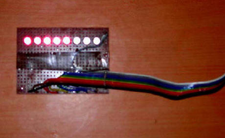
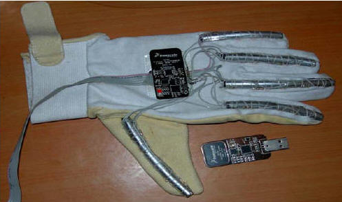

Hardware implementation and testing
Implementations
At the start of the project we did not have any samples of MEMS sensors so we decided to implement the drivers and test them out. One of our initial attempts was to try and use the parallel port of the PC for I/O. This isuseful if we tried to implement a Pinch glove which will give information of hand gripping an object or if the fingers are open. For this we will fix proximity sensors in the fingertips of the glove and as the fingers come closer it will result in a signal indicating that a object is being gripped or the hand is closed. It will give a simple binary output to indicate status of the hand.
Parallel port tester
To see if the port really worked as a general purpose bidirectional I/O implementation we decided to fix eight Light emitting diodes on the data pins shown below.

Fig: Port tester
Evaluating ADIS16003 accelerometer
Since no free samples had arrived so far we managed to get on loan ADIS16003 2DOF accelerometer from analog devices. This accelerometer uses a SPI serial port giving out a 14 bit digital output. To read the SPI port we either require a SPI port card or a microcontroller having a SPI master port. Another way of implementing a SPI port is to use the parallel port and use GIVEIO along with it. This info we got from ADI website. They have shown implementation of a reference design kit called ADISEVAL. The fig below shows ADISEVAL board from ADI and sensor board.
The evaluating software screen shot is shown below.
Our implementation of ADISEVAL kit using the schematic from ADI. The circuit diagram is shown in fig below.
We implemented the board successfully but realised there was noise in the data. The sensor we had with us was a preproduction variety and we assume that there was some flaw in the sensor. Our implementation is presented below in fig.
Fig: ADISEVAL implementation
ZSTAR implementation
The ZSTAR design from Freescale semiconductor provides small portable boards with the capability to demonstrate and evaluate various accelerometer applications that accommodate the cost-effective, low-power wireless connection. The ZSTAR design provides two small portable boards with the capability to demonstrate and evaluate various accelerometer applications that accommodate the cost-effective, low-power wireless connection. Salient features include:
- A multi-axis acceleration sensor that enables multiple detection situations for potential applications and includes a g-select feature with a 1.5g-10g range
- The highly integrated and versatile MC9S08QG8 MCU includes a background debugging system and on-chip in-circuit emulation (ICE) with real-time bus capture- providing single-wire debugging and emulation interface
- The MC13191/MC13192/MC13193
2.4 GHz low-power transceivers provide a cost-effective solution for short-range data links and networks
- The MC68HC908JW32 MCU is in the family of the enhanced M68HC08 CPU (CPU08) and is available with a variety of memory sizes and types, modules and package types
- Battery life extension through low-power, low-current operation
- Software support for easy development
Fig below shows the ZSTAR implementation.
Fig: ZSTAR implementation
VR Glove
The VR glove consists of an ordinary glove made from cotton cloth and Suede leather. This is the kind of glove golfer's use during play. The glove has been suitably modified as shown in fig below.

Fig: VR Glove complete implementation
Flexible plastic pipes with silver coating on top to avoid interference from ambient light were used to make analog sensors using an infra red light sensor and detector combination per finger. It was found that we got a voltage variation from 0.5V to 2.3V approximately when the fingers were opened and closed. This was fed to the ADC inputs of port "A" of ATMEGA16 microcontroller which was programmed to act like a 8 bit ADC and send the data per input to the serial port implemented using the MAX232 IC.[MA99] This data was read on the PC serial port and used for motion of fingers of the VR hand. The ZSTAR design was used with the glove to give orientation to the VR hand. The USB input was used as a standard serial port (com2) whereas the MAX232 output was read on serial port 1 (com 1) of a standard PC. The controller board and programmer together with their circuit diagrams are shown in fig below. The software used for programming the controller was ICC AVR from Imagecraft. An evaluation version was used.
Fig : ATMEGA16 implementation with Programmer
Gyro implementation for the VR gun
A Ultra gyration gyro mouse was brought and taken apart. The PCB with the microcontroller and the MG110 gyro was removed shown below.
Fig: Ultragyration Gyro
All the switches and battery connections were removed and appropriate modifications to the circuits were made. A Digital Multimeter was used to ohm out the connections to see which contacts are made when the button is pressed. The PCB has to be firmly attached inside the gun body and buttons fixed to the trigger. A manual calibration of the cursor to the gun aiming sight is recommended to be performed using a laser pointer and a tripod stand. The RF channel of the digital transmitter also needs to be fixed so that the mouse is immediately detected at the receiving end. The second PCB inside the mouse needs certain contacts to be shorted out and the optical sensor removed or disabled to avoid spurious triggering. The modifications are shown in fig below.
Modifications to the toy weapon
A toy gun resembling a 9mm carbine was brought from the local toy shop. The weapon was opened and all parts that were not required were removed. Both the PCB from the gyro mouse were suitably mounted inside this weapon. The MG110 gyro needs to be removed. The proximity sensor was replaced by a fixed 100k resistor, leaving the LED side blank. The components for optical mouse were disconnected by following the wiring on the PCB. The scan button for the SPI wireless transceiver from Cyprus semiconductor was ohmed out and a separate switch was fixed in its place. The channel once fixed will generally not get shifted on its own but a scan button was provided on the outside of the gun in case this happens. A 2mm inline connector was made to join both the PCB together. The charging PCB was removed from the charging cradle and modified to be fitted inside the gun. The onboard voltage regulating device was used for connecting the battery to the charger. Initially an independent voltage regulator was used but was deemed not required after the drop across the resistance was able to bring the charging voltage to within limits of the Li-on battery pack. The charger used presently is not very fast and a faster charger for Li-on pack can be used to replace the current one.
The MG110 Gyro module needs to be taken out to be fitted into the barrel of the gun. A 2 DOF accelerometer needs to be used to correct drift errors in the gyro by providing a stable reference bias. After all modifications were completed the weapon was closed and made ready for testing. During testing we found the device easily mapped to the screen pixels. We recommend using a PIC controller with a SPI interface to read the MG110 data and accelerometer data and then performing adaptive Kalman filtering at the microcontroller level and integrating the output to a Cypress wireless module transceiver. This input can be received at the other end by a similar transceiver module and fed to a PIC controller with USB interface. The Controller can then implement a mouse or a virtual serial port to read the data.
Completed weapon
After completing all the connections a suitable trigger switch was selected and fixed to a trigger mechanism. The switch was connected to one of the programmable buttons. It is recommended that a robust leaf switch be used in place of the present switch used as the trigger isoperated all the time. The cue from the button was subsequently used to indicate trigger press and used in a home brewn game. The fig below shows the completed gun.
The battery charging circuit was also modified. There are additional programmable buttons available that can be used to indicate magazine fitment, cocking and other indicators for a state of the art military training simulator. There is also a rotary encoder available that can also be used for deriving cues for the virtual environment. If additional functionality is desired the MG110 gyro module can be removed from this PCB and implemented using a different microcontroller such as a RCM module from rabbit semiconductor that has an RTOS and many more advanced features for extended I/O and robust design.

Fig : Modified toy gun
Testing the gun
On completion of the gun hardware it was prudent on our part to rest the gun for correct tracking capability and also for testing drift in gyros over time. The gun seemed to perform good tracking, the static tests showed no appreciable drift in gyros after 20 minutes of testing time. Customised driver can be made using the windows DDK and try and make our own driver for our emulated gun. We will load the driver at start of the application and unload it on exiting the application. This will lead to precision control that we desire. A test plot is presented in fig below.
Fig: UI for stability testing
Since we require data fusion in both the systems to get accurate output a brief on how this data fusion takes place is presented below.
Data Fusion and Processing Methodologies
Sensors' measurements or data need to be properly interpreted, processed and fused in order to generate refined navigation information. The model-based Kalman filter and the model-free artificial intelligence (AI) methods are two different data processing and data fusion techniques. The Kalman filter offers a powerful method for linear data fusion and estimation that are optimal in the statistical sense if the system models are known. AI methods including fuzzy logic and neural networks provide a nonlinear mechanism for high-level inference, data classification, and functional mapping.
Kalman Filter
The Kalman filter is a linear recursive data processing algorithm that processes all available measurements, regardless of their precision, to estimate the current value of the variables of interest, with use of knowledge of the system and measurement device dynamics, the statistical description of the system noises, measurement errors, and uncertainty in the dynamics models, and available information about initial conditions of the variables of interest. If the input data fits the predefined linear dynamics and statistical models and prior knowledge is known, the Kalman filter can provide an optimal, in a minimum variance sense, estimate of the state vector. Accordingly, the Kalman filter has become the most common technique for estimating the state of a linear system particularly in navigation systems. Since the estimation process is implemented on a computer, the discrete form of the Kalman filter is generally used.
Fuzzy Logic
The concept of fuzzy logic was first conceived by Zadeh (1965). As the complexity of a system increases, it becomes more difficult to make a precise statement about its behavior and fuzzy logic provides a framework to deal with such problems naturally (Zadeh, 1965). Resembling human decision making by using if-then rules and handling ambiguous and imprecise information by using fuzzy set theory, fuzzy logic provides a successful way of dealing with complex systems. Fuzzy logic has found successful applications in decision making, data classification, pattern recognition, automatic control and etc.

Fig: Fuzzy interface system
In addition to above we need to use a moving average filter to feed the fuzzy interface system to get classification data. It is realised that the traditional approach of using only Kalman filtering is insufficient for a highly precise system but in the present case it is not required but if we desire highly accurate inertial data then we need to use advanced neuro-fuzzy models and fuzzy inference systems to predict INS drift errors. These are available in some very high end systems.